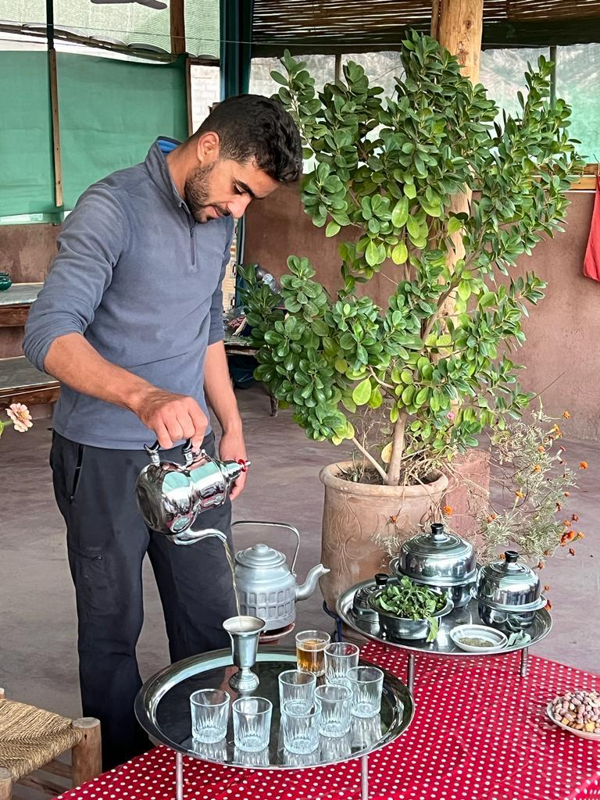
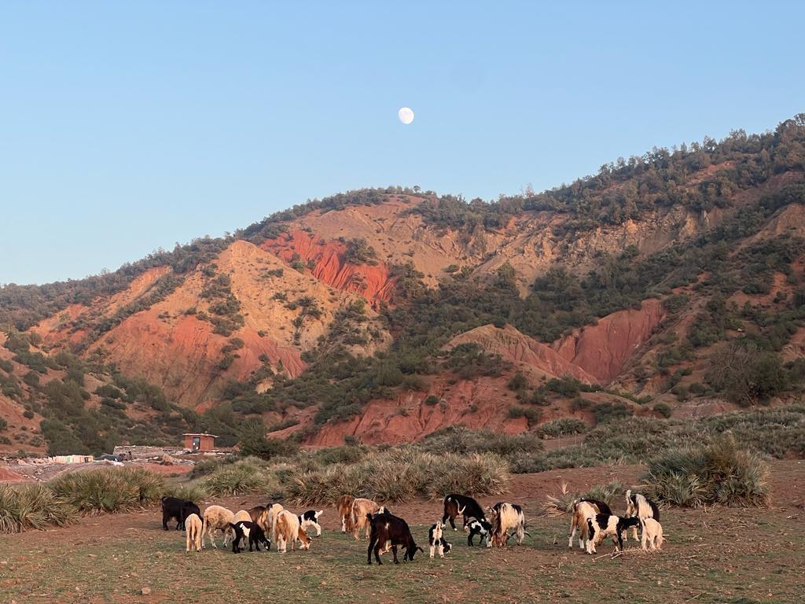
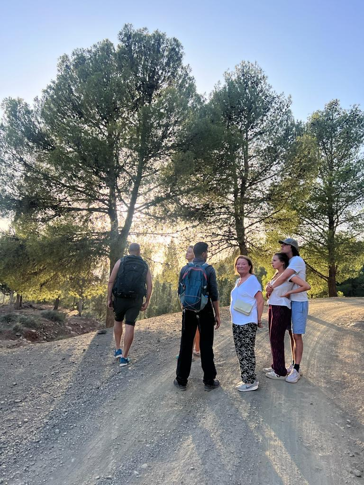

Waterfalls
WaterfallsSetti Fatma, Ourika Valley
Atlas Trek & Setti Fatma Waterfalls Adventure
Trek through the High Atlas to the Setti Fatma waterfalls with a local mountain guide.
Day tripModerate
Discover more

Local guided experiences
Discover authentic experiences in the Ourika Valley with local mountain guides. Explore Berber villages, scenic hiking trails, Setti Fatma waterfalls, traditional culture, and unforgettable Atlas Mountain landscapes.
WaterfallsSetti Fatma, Ourika Valley
Trek through the High Atlas to the Setti Fatma waterfalls with a local mountain guide.
Day tripModerate
Discover more
 Nature
NatureOurika Valley, near Marrakech
A day trip from Marrakech into the green Ourika Valley, its villages and river views.
Day tripEasy
Discover more
 Culture
CultureBerber villages, Atlas Mountains
A walking experience through traditional Berber villages in the Atlas Mountains.
Day tripEasy
Discover more
 Hiking
HikingOurika Valley, High Atlas
Atlas Mountains hiking on scenic trails above the Ourika Valley, led by a local guide.
Day tripModerate
Discover more
 Waterfalls
WaterfallsSetti Fatma, Ourika Valley
Discover the cascades of Setti Fatma, at the end of the Ourika Valley road.
Day tripEasy to moderate
Discover more

CultureHigh Atlas villages
Share Berber traditions, hospitality and everyday life with a local guide.
Day tripEasy
Discover more

NatureOurika Valley, High Atlas
Valley landscapes, mountain light and quiet corners for nature and photography lovers.
Day tripEasy
Discover more
 Private
PrivateFrom Marrakech
A private day in the Atlas Mountains shaped around your group, pace and interests.
FlexibleTailored to you
Discover more

HikingOurika Valley, High Atlas
A full day to explore the Ourika Valley and its mountain scenery at a relaxed pace.
Full dayEasy to moderate
Discover more
Try another category or see all of our Ourika Valley day trips.
What we offer
Local guide, local valley
The Ourika Valley is one of the most rewarding day trips from Marrakech. Within a short journey you leave the city behind and enter the High Atlas, where terraced fields, red-earth villages and a mountain river set the scene for Atlas Mountains hiking, Setti Fatma waterfalls and quiet viewpoints.
With a local mountain guide, the valley becomes more than scenery. You walk through traditional Berber villages, hear the stories behind the landscape and experience Moroccan hospitality first-hand, on private tours or in small groups.
Trails for every pace, from gentle valley walks to longer Atlas Mountains hikes with sweeping views.
Meet the traditions, hospitality and daily life of the mountain communities with a guide born in the valley.
Follow the river to the cascades of Setti Fatma and enjoy fresh mountain air, greenery and photo-worthy landscapes.
Good to know
Answers about Ourika Valley tours, Setti Fatma waterfalls, Atlas Mountains hiking and private day trips from Marrakech.
The Ourika Valley lies south of Marrakech in the High Atlas. The valley starts roughly 30 to 40 km from the city, and Setti Fatma at the end of the valley road is around 60 km away. The drive usually takes about an hour to an hour and a half depending on traffic and stops. Your guide confirms the pick-up and timings when you book.
The Setti Fatma waterfalls hike follows mountain paths with some uneven and rocky ground. Many visitors enjoy it, and we can adapt the route to your group. Tell us your fitness level and who is coming and we will recommend the right Ourika Valley hike.
Wear comfortable walking shoes with good grip and bring water, sun protection, a hat and a light extra layer, as it can be cooler in the mountains. A small backpack and a camera are useful. We can share a full checklist once your trip is confirmed.
Yes. Private tours from Marrakech are available for couples, families and small groups. Send us your date, group size and interests, such as hiking, waterfalls, Berber villages or culture, and we will shape the day with you.
What is included depends on the day trip you choose. We confirm clearly whether lunch is part of your experience when you book, and you can tell us about any dietary needs in advance.
Families are welcome to get in touch. Some routes suit children better than others, so tell us the ages of the children and we will suggest a gentle Ourika Valley outing or a private tour at their pace.
The Ourika Valley can be visited throughout the year. Spring and autumn are often popular for hiking because the weather is milder, summer is warm so earlier starts help, and winter can be cold in the mountains. Ask us about conditions for your dates.
Yes. Your day is led by Mohamed Oudra, a local Berber mountain guide born and raised in the Ourika Valley, who knows the trails, the villages and the area around Setti Fatma.
The quickest way is WhatsApp on +212 661 886 234. You can also email trekkingatourika@gmail.com or use the contact page with your preferred date, group size and the experience you have in mind.
Ready when you are